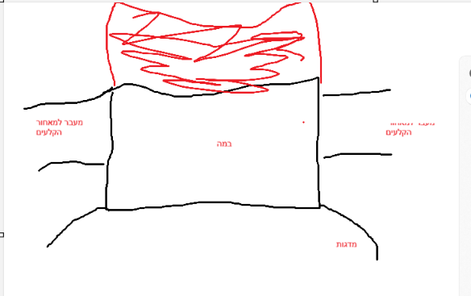
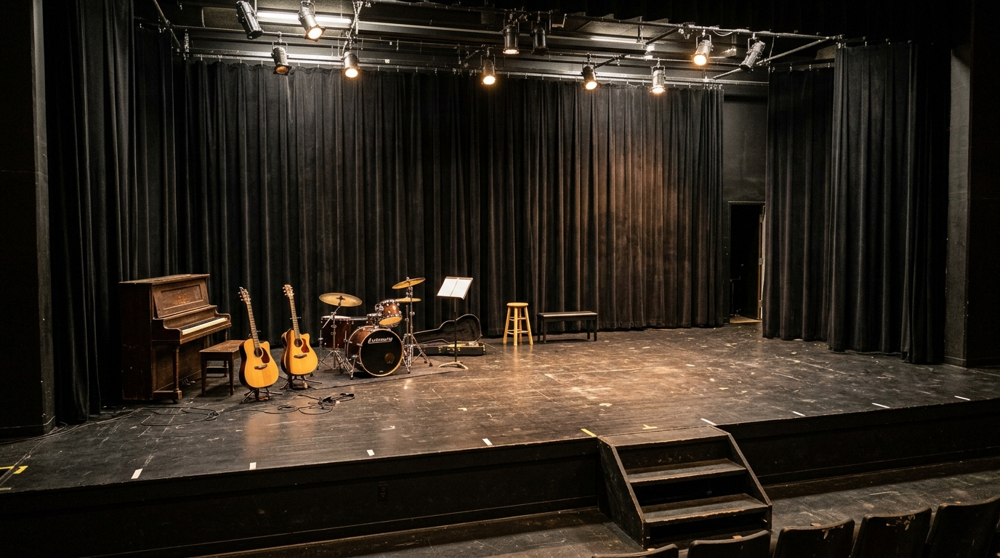
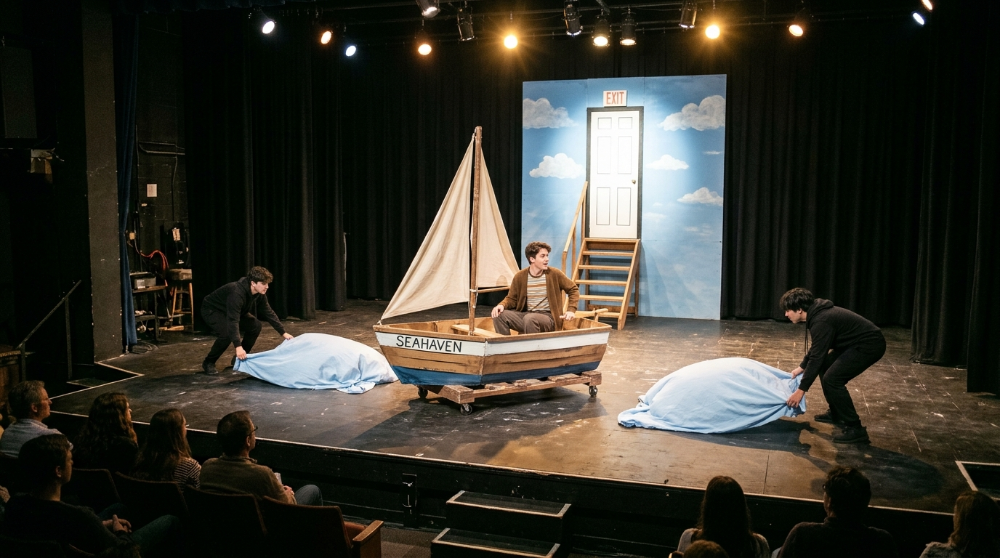
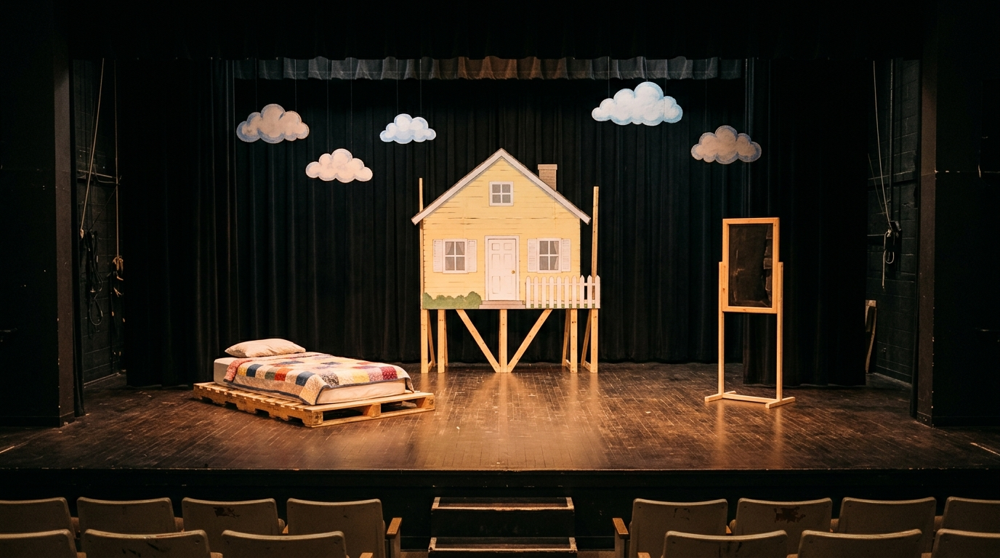
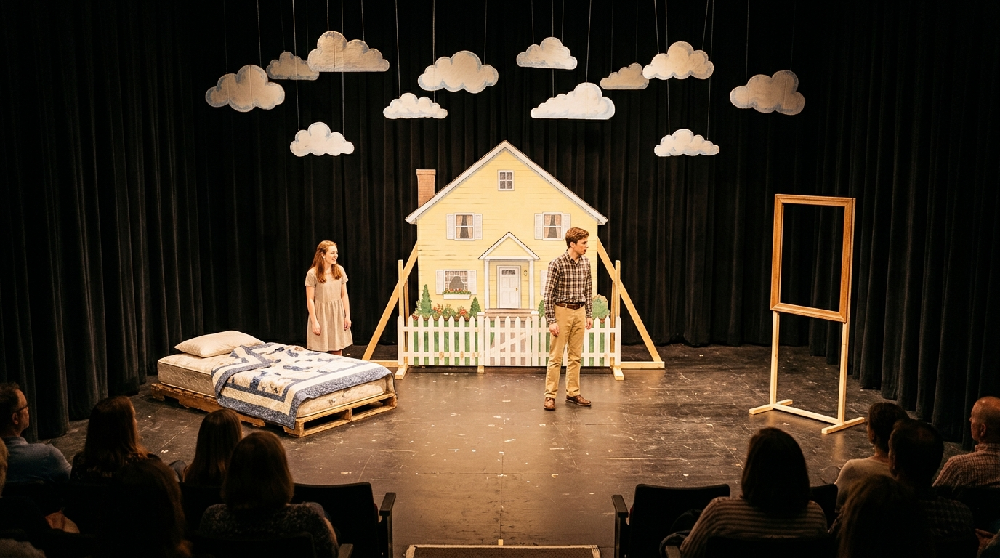

מפת הבמה השחורה ופינת הכלים הקומפקטית
תרשים מדויק לבמה השחורה הקטנה שלכם: רצפה שחורה, וילון שחור מאחור (במקום הסימון האדום בסקיצה), מעברים צרים ופינת נגנים צפופה וחסכונית.
עליו תולים בסיכות ביטחון סדין שמיים תכול מצויר ודלת קרטון בסצנת הסיום בלבד
אביזרי קרטון קלים נכנסים ויוצאים ברגע • שימוש באלומות ספוט ממוקדות
פינת הכלים הקומפקטית והמצומצמת
פתרון חסכוני במקוםאיך מכניסים פסנתר, גיטרות ותופים בלי לתפוס מקום יקר?
- לא על הבמה עצמה! מציבים אותם על רצפת האולם בפינה השמאלית, צמוד לקצה הבמה. כך הבמה השחורה הקטנה נשארת 100% פנויה לשחקנים.
- קלידים חשמליים במקום פסנתר כנף: משתמשים בפסנתר חשמלי/קלידים על סטנד X פשוט שתופס רק 1.2 מטר.
- סטנד גיטרות כפול/משולש: במקום 3 סטנדים נפרדים שתופסים שטח, סטנד אחד מרכזי לגיטרות.
- מערכת תופים מכווצת: מקרבים את הסנר, הבס וההיי-האט קרוב מאוד אחד לשני, או משתמשים בקחון (Cajon) אקוסטי עם מצילה אחת לחיסכון מקסימלי במקום!
השוואה: הסקיצה שלכם מול הבמה השחורה הריקה האמיתית

הסימון האדום מאחור = הוילון השחור של הבמה. משני הצדדים מעברים צרים, ומימין המדרגות אל הקהל.

בדיוק המציאות שלכם: במה שחורה קטנה, וילון שחור פשוט, מדרגות לימין ופינת נגנים צפופה ואינטימית בשמאל בלי שום פוזה או תקציב.
הדמיות ה-DIY האמיתיות להצגת בית ספר
תמונות ריאליסטיות המראות בדיוק איך ההצגה תיראה עם תפאורת קרטון ובדים תוצרת בית על הבמה השחורה. לחצו להגדלה.
1. הבמה השחורה הריקה ופינת הנגנים
רצפה שחורה, וילון שחור מאחור, מעברי בד שחורים בצדדים, מדרגות פשוטות לאולם ופינת נגנים קטנה ומצומצמת בשמאל.

2. שיא ההצגה ב-DIY2. סירת הקרטון וקיר השמיים
סירה עשויה מקרטון מקרר צבוע המורכבת על כיסא משרדי ישן עם גלגלים! 2 תלמידים מניפים סדיני תכלת לגלים, וסדין שמיים עם דלת קרטון תלוי על הוילון השחור.

3. חדר השינה והבית בקרטון3. חדר השינה והעיירה מקרטון
חזית בית צהובה וגדר לבנה מקרטון מקררים על רגלי לייסט פשוטות, מסגרת עץ ריקה שדרכה טרומן מצחצח שיניים, וענני קרטון תלויים על חוט דיג.

4. מראה חי מההצגה4. תחושת ההצגה החיה
השילוב בין הבמה השחורה, תאורת ספוטים ממוקדת ואלמנטי הקרטון בעבודת יד יוצר קסם תיאטרוני חם, אינטימי ומרגש במיוחד.
מדריך הכנה עצמית מהירה (DIY) באפס תקציב לנוער
איך מכינים את כל התפאורה ל"המופע של טרומן" תוך כמה ימי עבודה בבית ספר מחומרים זמינים וחינמיים לחלוטין.
1. סירת המפרש "סנטה מריה" ב-0 שקלים
איך מכינים תוך שעתיים:
- הבסיס: לוקחים כיסא משרדי מסתובב על גלגלים מחדר מורים או גלגיליות/משטח הובלה קטן מקרש.
- הדפנות: לוקחים קרטון מקרר ענק (מבקשים חינם מחנות מוצרי חשמל), חותכים בסכין יפנית צורת חרטום סירה משני הצדדים וצובעים בצבע חום/לבן.
- החיבור: מהדקים את הקרטון לכיסא עם סרטי הדבקה (מסקנטייפ חבלה) או אזיקונים.
- המפרש: מקל מטאטא קשור מאחור עם בד לבן/קרטון משולש. טרומן יושב על הכיסא, מניע את עצמו עם הרגליים או נמשך ע"י חוט נסתר!
2. גלי הים של הסערה מסדינים מהבית
איך מכינים ללא שום עלות:
- מביאים מהבית 2-3 סדינים ישנים בצבע כחול, טורקיז או תכלת (אפשר גם סדין לבן שצובעים בקערת מים עם קצת צבע גואש כחול).
- שני תלמידים לבושים שחור עומדים משני צדי הבמה ומחזיקים את קצוות הסדין.
- בשיט הרגוע: מניעים בעדינות למעלה ולמטה – מראה יפהפה ופיוטי.
- בסערה: מנערים בחוזקה, מתופף התזמורת נותן רול על המצילה, ותאורן מהבהב בספוט (ברקים). בסיום, מקפלים את הסדין לתוך שקית בשנייה אחת!
3. קיר השמיים והדלת על הוילון השחור
הפתרון הכי גאוני לסצנת הסיום:
- לא בונים קיר מעץ! לוקחים סדין תכלת או 2 קרטוני ענק מחוברים, צובעים עליהם עננים לבנים רכים בספוג.
- מחברים את הסדין/קרטון ישירות לוילון השחור האחורי עם סיכות ביטחון גדולות או קליפסים של כביסה.
- דלת היציאה: חותכים בקרטון פתח דלת פשוטה (רוחב 70 ס"מ, גובה 1.80 מ') שנפתחת כמו חלון.
- המדרגות: מניחים שרפרף עץ פשוט של כיתה או 2 קוביות עץ של בית הספר לפני הדלת. כשדלת נפתחת – מאחוריה יש את החושך של הוילון השחור!
4. מראת חדר השינה ללא זכוכית
פתרון אנתרופוסופי פשוט ומושלם:
- לוקחים מסגרת תמונה ריקה מעץ (אפשר ישנה מהבית או לחבר 4 קרשים פשוטים).
- מחברים אותה לבסיס עץ קטן כך שהיא עומדת בגובה הפנים של טרומן.
- טרומן עומד מאחורי המסגרת הריקה ומצחצח שיניים מול הקהל – הקהל הוא המראה שלו!
- עובי המתקן: 3 ס"מ בלבד! שחקן מרים אותו ביד אחת ומפנה אותו לקלעים בתוך שתי שניות.
5. נפילת הפנס מהשמיים (תמונה 1)
איך עושים בלי לסכן אף אחד:
- לוקחים קופסת נעליים או בקבוק פלסטיק עטוף באיזולירבנד שחור ונייר כסף.
- קושרים חוט דיג שקוף שעובר דרך מוט התאורה בתקרה אל מעבר הקלעים.
- ברגע הנכון, איש צוות משחרר את החוט – הפנס "מתרסק" על הבמה השחורה ליד טרומן, ומתופף התזמורת נותן מכת מצילתיים חדה (Crash) שמשלימה את אפקט הנפץ!
6. סצנת המכונית והכור הגרעיני
בלי מכונית אמיתית:
- שני כיסאות תלמידים רגילים עומדים זה לצד זה בקדמת הבמה.
- טרומן מחזיק צלחת פריסבי או חישוק קטן כהגה ולוחץ על "דוושה" דמיונית. מריל יושבת לצידו מבוהלת.
- שני שחקנים מאחור מנערים קלות את הכיסאות ליצירת תחושת נסיעה מהירה.
- בכור הגרעיני: שני שחקנים בסרבלי נייר לבנים של צבעים (10 ש"ח בטמבור) ומסכות קורונה עומדים עם שלט צהוב.
סצנוגרפיה מותאמת DIY ל-14 תמונות המחזה
איך מציגים כל תמונה ותמונה מהמחזה שלכם בעזרת אביזרי קרטון פשוטים שיוצאים ונכנסים תוך 5 שניות.
הבוקר של טרומן, המראה ונפילת הפנס
✂️ תפאורת DIY מהירה
- מיטה: מזרן פשוט של בית ספר מונח על 2 ארגזי עץ.
- מראה: מסגרת תמונה ריקה ללא זכוכית על רגלית.
- פנס נופל: קופסת נעליים צבועה בשחור על חוט דיג.
🚪 פינוי הבמה השחורה
מריל מעירה את טרומן. ברגע שטרומן יוצא "לרחוב", שני תלמידים מרימים את המזרן והמסגרת ומחליקים איתם לקלעים.
🎶 התזמורת בפינה
נעימת פתיחה עליזה בקלידים ובגיטרה אקוסטית. ברגע נפילת הפנס: מכת סנר/מצילה חדה ודממה פתאומית!
משרד הביטוח ומזח המעבורת להארבור איילנד
✂️ תפאורת DIY מהירה
- משרד: שולחן תלמיד אחד, טלפון ישן מהבית, קלסר ודפים.
- שלט מעבורת: חתיכת קרטון מחוברת למקל מטאטא "מעבורת להארבור איילנד".
- מים: חבל פשוט שטרומן עומד לפניו ופוחד לדרוך.
🚪 פינוי הבמה השחורה
טרומן רק עושה 4 צעדים מקדמת הבמה אל המדרגות הימניות. האולם החשוך מייצג את המים הפתוחים.
🎶 התזמורת בפינה
צליל גיטרה קופצני במשרד, שהופך למקצב תופים מהוסס וצלילי פעמונים בקלידים כשנזכר בטראומה.
השיחה עם מרלון על הגשר הלא-גמור בלילה
✂️ תפאורת DIY מהירה
- אפס תפאורה! רק שרפרף עץ או 2 ארגזי פלסטיק הפוכים שעליהם הם יושבים.
- שישיית פחיות בירה ריקות וכדור קטן.
🚪 פינוי הבמה השחורה
כל הבמה חשוכה! רק ספוט אחד חם מאיר עליהם במרכז הבמה השחורה. הוילון השחור נבלע בחושך.
🎶 התזמורת בפינה
נגינת פסנתר/קלידים עדינה ונוגעת ללב, שקטה ואינטימית מאוד.
פלאשבק: נשף התיכון והחוף עם סילביה (לורן)
✂️ תפאורת DIY מהירה
- סוודר אדום: סוודר צמר אדום בולט וסיכה עגולה מקרטון "איך זה ייגמר?".
- מכונית האב החוטף: שני שחקנים יוצאים מהקלעים עם פנסי אופניים/פנסי יד חזקים ישירות לעיני הקהל וצופרים בצפצפה!
🚪 פינוי הבמה השחורה
שום מבנה פיזי! האור המסנוור של שני הפנסים מספיק כדי לשכנע את הקהל שהגיעה מכונית חורקת.
🎶 התזמורת בפינה
שיר שקט בגיטרה וקלידים, ואז מכת תופים חדה ורועמת בעצירת ה"מכונית" וחטיפת סילביה.
הסערה בים בסירה "סנטה מריה" ודלת היציאה מהעולם
✂️ תפאורת DIY מהירה
- סירת קרטון על כיסא משרדי: מתגלגלת בקלות פנימה ממעבר ימין.
- גלי סדינים תכולים: שני תלמידים מנופפים בסדינים.
- קיר שמיים ודלת: סדין תכלת עם עננים ודלת קרטון תלוי על הוילון השחור, שרפרף עץ לפניו.
🚪 המהלך הדרמטי
טרומן "מפליג" בסירה. הסירה פוגעת בקיר הסדין/קרטון בצליל "בום". טרומן יורד, עולה על השרפרף, פותח את דלת הקרטון, אומר "בוקר טוב, צהריים טובים ולילה טוב!" ויוצא אל מאחורי הוילון השחור!
🎶 התזמורת בשיא
התופים בסערה אדירה ורועמת יחד עם הגיטרות! בסיום: שקט מוחלט, ורק נגינת פסנתר שברירית בפרידה.
צ'ק-ליסט איסוף והכנה עצמית (DIY)
רשימת הפריטים מתוך המחזה (עמ' 40-44) עם פירוט מאיפה משיגים בחינם ואיך מכינים.
| V | פריט / רקוויזיט | תמונה במחזה | איך מכינים בחינם / מאיפה מביאים | סטטוס |
|---|